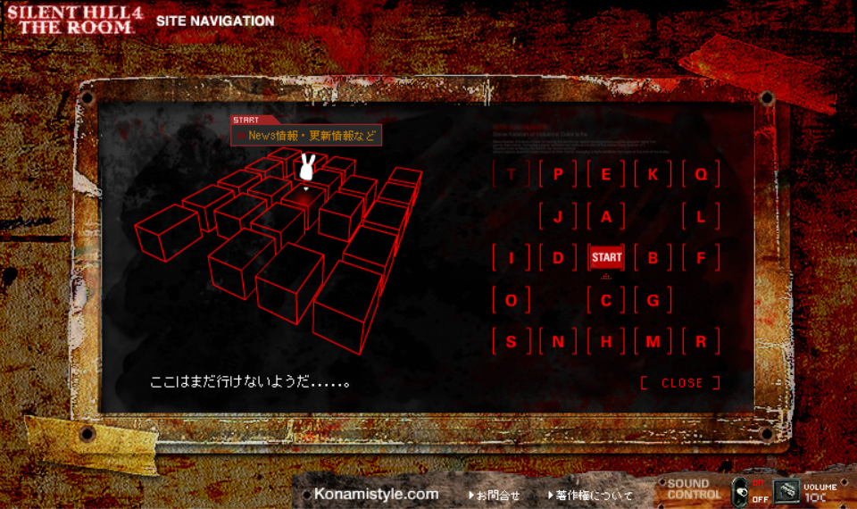
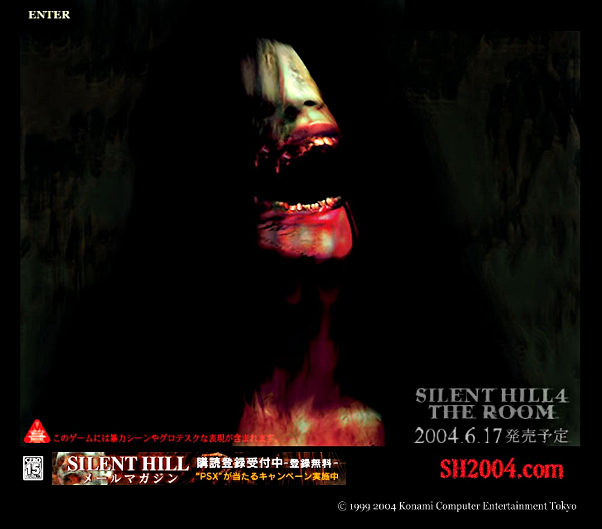
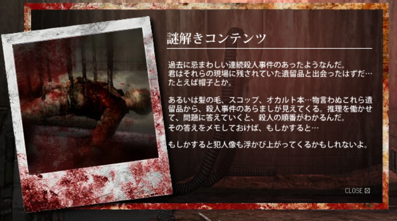
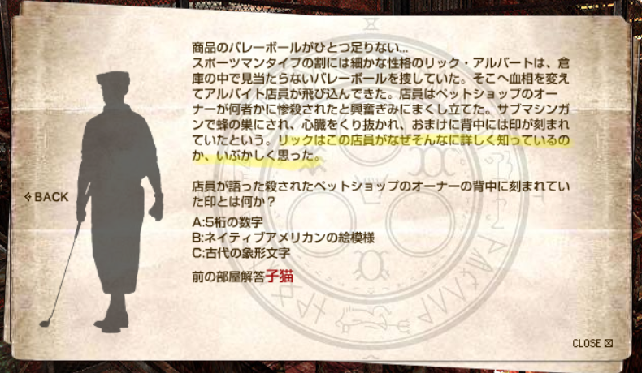
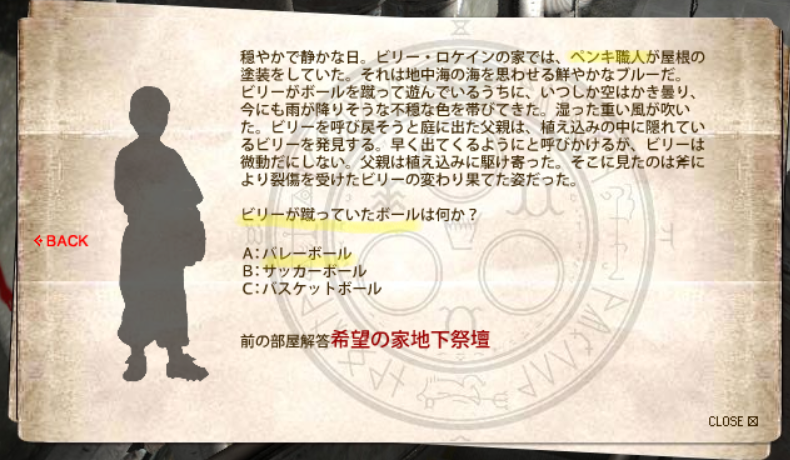

[SH4] Walter's Job Hopping

How SH4's Victim Files Reveal the Hardships He Went Through, Haha
This is a mirror of the DeviantArt version linked above, provided as a backup and for easier access.


Last time, I mentioned that the latter half of the Silent Hill 4's victim files were fan-made, as well as the Silent Hill wiki admins' recent page that faithfully translates and lists the original Japanese files.
Please refer to that for the English details.
https://silenthill.fandom.com/wiki/Victim_files_(Silent_Hill_4:_The_Room)
This part isn't translated on the wiki, but the official site that had the data, "SH2004 . com," itself was set up like a puzzle where solving quizzes unlocks new pages.
The description said something like this:

Puzzle Content
It seems there was a grim string of murders in the past.
And you must have already come across the items left behind at the scenes…
A hat, for example.Or maybe a strand of hair, a shovel, an occult book… By examining these silent traces, the outline of each case starts to emerge. Use your deductive skills and answer the questions—then the order of the murders will become clear. If you jot that down, then maybe…
Just maybe, the identity of the killer will come into focus too.
Basically, the original site was structured so that you could unlock the victim information while unraveling the connections between them. And these victim files suggest that Walter approached his victims under the guise of a part-time job.

In Rick Albert's file, there's that line,
"Rick wondered how the clerk could know so much about the incident."
Well, that clerk is actually Walter, the same one who caused the incident at the pet shop Garland's.

The red text in each file came from a puzzle on the Japanese official site SH2004 . com, and it turns out the ball that the twin boys, Billy Locane were kicking wasn't a soccer ball, it was a volleyball.
That volleyball was the one the owner, Rick of the Albert's Sports, had been searching for after it went missing.
From that, it's inferred that Walter was the one who took the volleyball from the shop and gave it to Billy Locane, and that Walter was also the one who was painting the roof of Locane's house right before the massacre. At least, that's how it was interpreted in Japan.
In other words, during the first ten cases, this has Walter attending a university in Pleasant River, working at a sports shop and committing murders at nearby places like the pet shop, bar, and watch store in Ashfield, and doing paint work and approaching the twins in Silent Hill. He's really got a lot on his plate!